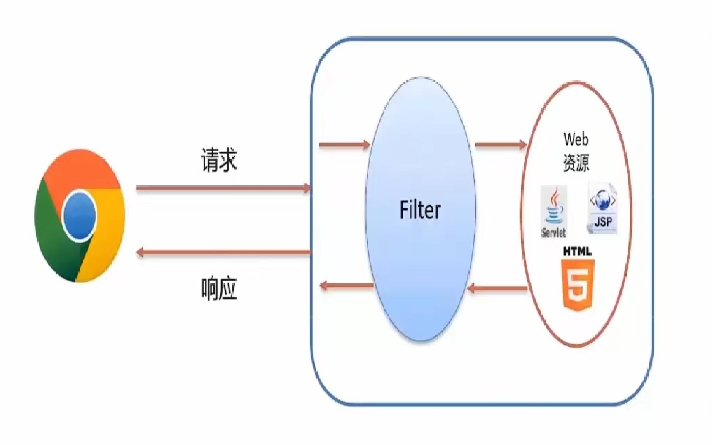

概念：Filter表示过滤器，是JavaWeb三大组件（Servlet、Filter，Listener）之一。
过滤器可以把对资源的请求拦截下来，从而实现一些特殊的功能。
过滤器一般完成一些通用的操作，比如：权限控制、同意编码处理、敏感字符处理等等…

Filter操作
定义类，实现Filter接口，并重写其他所有方法
1
2
3
4
5
6
7
8public class FilterDemo implements Filter {
public void doFilter(ServletRequest servletRequest, ServletResponse servletResponse, FilterChain filterChain) throws IOException, ServletException {}
public void init(FilterConfig filterConfig) throws ServletException {}
public void destroy() {}
}配置Filter拦截资源的路径：在类上定义
@WebFilter注解1
2
public class FilterDemo implements Filter在doFilter方法中输出一句话，并放行
1
2
3
4
5public void doFilter(ServletRequest servletRequest, ServletResponse servletResponse, FilterChain filterChain) throws IOException, ServletException {
System.out.println("FilterDemo...");
//放行
filterChain.doFilter(servletRequest,servletResponse);
}
Filter执行流程
执行放行前逻辑->放行->访问资源->执行放行后逻辑
Filter拦截路径配置
- Filter可以根据需求，配置不同的拦截资源路径
- 拦截具体的资源：/index.jsp：只有访问index.jsp时才会被拦截。
- 目录拦截：/user/*：访问/user下的所有资源，都会被拦截
- 后缀名拦截：*.jsp：访问后缀名为jsp的资源，都会被拦截
- 拦截所有：/*:：访问所有资源，都会被拦截
Filter过滤器链
- 一个Web应用，可以配置多个过滤器，着多个过滤器成为过滤器链
- 注解配置的Filter，优先级按照过滤器类名（字符串）的自然排序
Listener
- 监听器可以监听就是在application，session，request三个对象创建、销毁或者往其中添加修改删除属性时自动执行代码的功能组件
监听对象创建和销毁的监听器
Servlet 规范定义了监听 ServletContext、HttpSession、HttpServletRequest 这三个对象创建和销毁事件的监听器，如下表所示。
| 事件源 | 监听器 | 监听器描述 | 创建和销毁方法 | 调用时机 |
|---|---|---|---|---|
| ServletContext | ServletContextListener | 用于监听 ServletContext 对象的创建与销毁过程 | void contextInitialized (ServletContextEvent sce) | 当创建 ServletContext 对象时 |
| void contextDestroyed (ServletContextEvent sce) | 当销毁 ServletContext 对象时 | |||
| HttpSession | HttpSessionListener | 用于监听 HttpSession 对象的创建和销毁过程 | void sessionCreated (HttpSessionEvent se) | 当创建 HttpSession 对象时 |
| void sessionDestroyed (HttpSessionEvent se) | 当销毁 HttpSession 对象时 | |||
| ServletRequest | ServletRequestListener | 用于监听 ServletRequest 对象的创建和销毁过程 | void requestInitialized (ServletRequestEvent sre) | 当创建 ServletRequest 对象时 |
| void requestDestroyed (ServletRequestEvent sre) | 当销毁 ServletRequest 对象时 |
监听属性变更的监听器
Servlet 规范定义了监听 ServletContext、HttpSession、HttpServletRequest 这三个对象中的属性变更事件的监听器，这三个监听器接口分别是 ServletContextAttributeListener、HttpSessionAttributeListener 和 ServletRequestAttributeListener。这三个接口中都定义了三个方法，用来处理被监听对象中属性的增加，删除和替换事件。同一种事件在这三个接口中对应的方法名称完全相同，只是参数类型不同，如下表所示。
| 事件源 | 监听器 | 监听器描述 | 方法 | 调用时机 |
|---|---|---|---|---|
| ServletContext | ServletContextAttributeListener | 用于监听 ServletContext 对象的属性新增、移除和替换 | public void attributeAdded (ServletContextAttributeEvent scae) | 当 ServletContext 对象中新增一个属性时 |
| public void attributeRemoved (ServletContextAttributeEvent scae) | 当删除 ServletContext 对象中的一个属性时 | |||
| public void attributeReplaced (ServletContextAttributeEvent scae) | 当 ServletContext 对象中的某个属性被替换时 | |||
| HttpSession | HttpSessionAttributeListener | 用于监听 HttpSession 对象的属性新增、移除和替换 | public void attributeAdded (HttpSessionBindingEvent hsbe) | 当 HttpSession 对象中新增一个属性时 |
| public void attributeRemoved (HttpSessionBindingEvent hsbe) | 当删除 HttpSession 对象中的一个属性时 | |||
| public void attributeReplaced (HttpSessionBindingEvent hsbe) | 当 HttpSession 对象中的某个属性被替换时 | |||
| HttpServletRequest | ServletRequestAttributeListener | 用于监听 HttpServletRequest 对象的属性新增、移除和替换 | public void attributeAdded (ServletRequestAttributeEvent srae) | 当 HttpServletRequest 对象中新增一个属性时 |
| public void attributeRemoved (ServletRequestAttributeEvent srae) | 当删除 HttpServletRequest 对象中的一个属性时 | |||
| public void attributeReplaced (ServletRequestAttributeEvent srae) | 当 HttpServletRequest 对象中的某个属性被替换时 |
监听 Session 中对象状态改变的监听器
Session 中的对象可以有多种状态：绑定到 Session 中、从 Session 中解除绑定、随 Session 对象持久化到存储设备中(钝化)、随 Session 对象从存储设备中恢复（活化）。
Servlet 规范中定义了两个特殊的监听器接口，用来帮助对象了解自己在 Session 中的状态：HttpSessionBindingListener 接口和 HttpSessionActivationListener 接口 ，实现这两个接口的类不需要进行注册。
| 事件源 | 监听器 | 监听器描述 | 方法 | 调用时机 |
|---|---|---|---|---|
| HttpSession | HttpSessionBindingListener | 用于监听 JavaBean 对象绑定到 HttpSession 对象和从 HttpSession 对象解绑的事件 | void valueBound (HttpSessionBindingEvent event) | 当对象被绑定（添加）到 HttpSession 对象中时 |
| void valueUnbound (HttpSessionBindingEvent event) | 当对象从 HttpSession 对象中解除绑定（移除）时 | |||
| HttpSessionActivationListener | 用于监听 HttpSession 中对象活化和钝化的过程 | void sessionWillPassivate (HttpSessionBindingEvent event) | 当绑定到 HttpSession 对象中的对象将要随 HttpSession 对象被钝化之前 | |
| void sessionDidActive (HttpSessionBindingEvent event) | 当绑定到 HttpSession 对象中的对象将要随 HttpSession 对象被活化之后 |